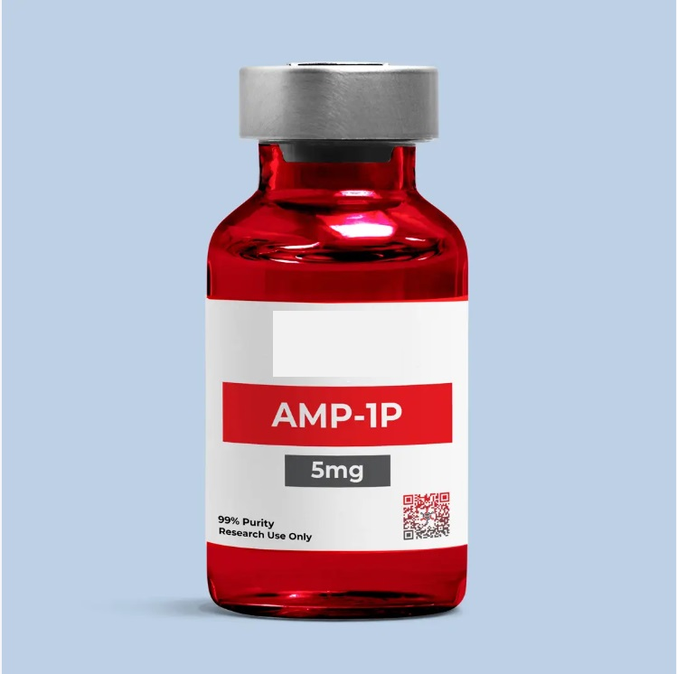
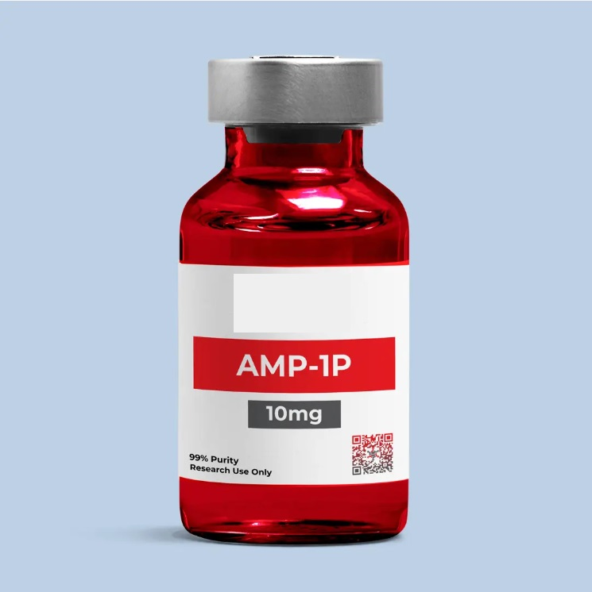
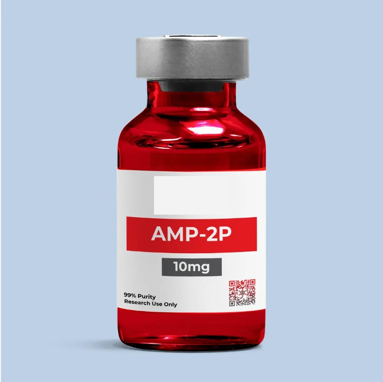
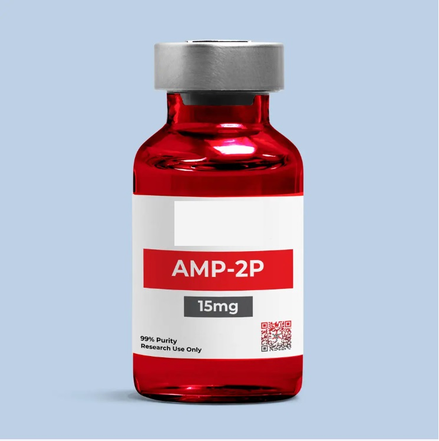
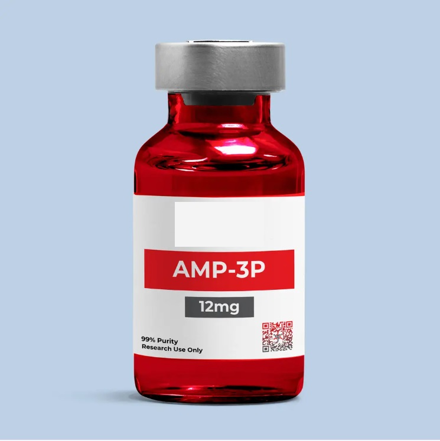

AMP-1P 5mg
Tipo: Péptido metabólico (agonista del receptor GLP-1).
Función: Apoya la regulación de la glucosa y ayuda a disminuir el apetito, contribuyendo al control metabólico y a la reducción de peso corporal.
Aplicación: Administración por vía inyectable bajo supervisión profesional.

AMP-1P 10mg
Tipo: Péptido metabólico (agonista del receptor GLP-1).
Función: Apoya la regulación de la glucosa y ayuda a disminuir el apetito, contribuyendo al control metabólico y a la reducción de peso corporal.
Aplicación: Administración por vía inyectable bajo supervisión profesional.

AMP-2P 10mg
Tipo: Péptido metabólico (agonista dual de receptores GLP-1 y GIP).
Función: Apoya la regulación del metabolismo y la glucosa, favoreciendo la reducción del apetito y los protocolos de disminución de grasa corporal.
Aplicación: Administración por vía inyectable bajo supervisión profesional.

AMP-2P 15mg
Tipo: Péptido metabólico (agonista dual de receptores GLP-1 y GIP).
Función: Apoya la regulación del metabolismo y la glucosa, favoreciendo la reducción del apetito y los protocolos de disminución de grasa corporal.
Aplicación: Administración por vía inyectable bajo supervisión profesional.

AMP-3P 6mg
Tipo: Péptido metabólico (agonista de receptores relacionados con el metabolismo energético).
Función: Apoya la regulación del metabolismo, contribuyendo al control del apetito y a los procesos de reducción de grasa corporal.
Aplicación: Administración por vía inyectable bajo supervisión profesional.

AMP-3P 12mg
Tipo: Péptido metabólico (agonista de receptores relacionados con el metabolismo energético).
Función: Apoya la regulación del metabolismo, contribuyendo al control del apetito y a los procesos de reducción de grasa corporal.
Aplicación: Administración por vía inyectable bajo supervisión profesional.

Bacteriostatic Water
Tipo: Agua estéril bacteriostática para uso farmacéutico.
Función: Se utiliza para reconstituir o diluir medicamentos y péptidos inyectables, ayudando a mantener la solución libre de crecimiento bacteriano.
Aplicación: Uso como diluyente en preparaciones inyectables bajo condiciones estériles.

Tesamorelin
Tipo: Péptido liberador de la hormona del crecimiento (GHRH).
Función: Su principal función es la reducción del exceso de grasa abdominal visceral (lipodistrofia), mejorando la composición corporal sin afectar significativamente los niveles de glucosa en el corto plazo.
Aplicación: Administración por vía inyectable (subcutánea), generalmente bajo supervisión profesional.